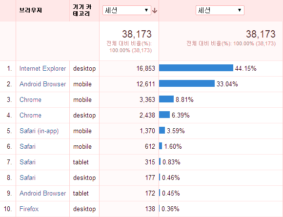
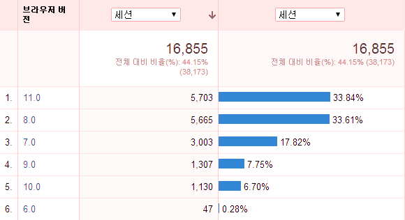
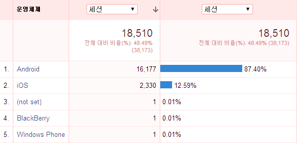
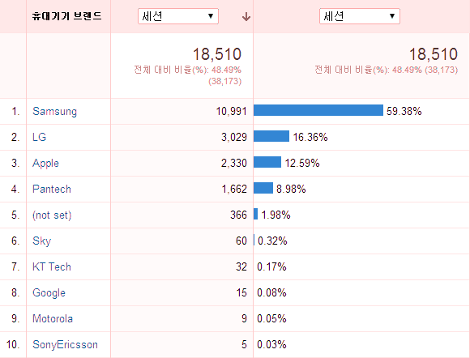
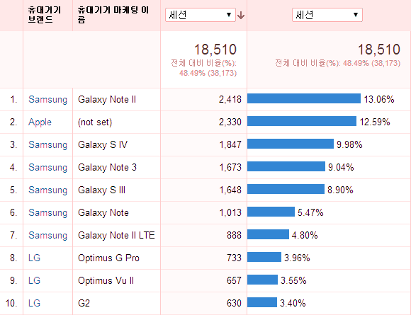
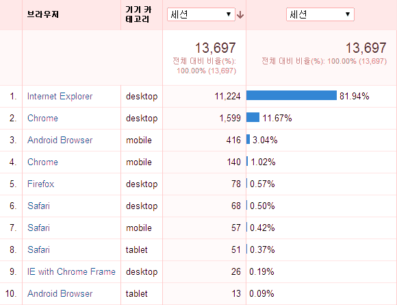
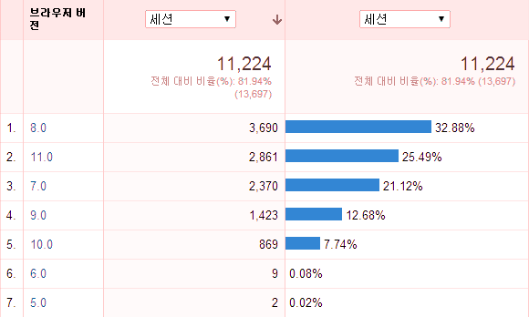
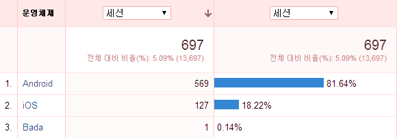
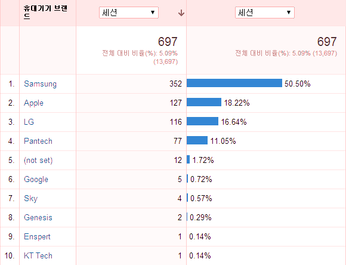
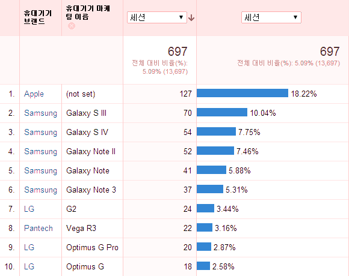

웹사이트 몇 곳의 4월달 구글 Analytics(방문 분석) 정보를 들여다보았다. 전체적으로 확실히 모바일이 강세라는 걸 느낄 수 있었으며 마이크로소프트의 인터넷 익스플로러는 최신 버전으로 빠르게 자리를 잡아가는 듯 하다. 방문자가 많은 사이트 두 곳에 대해서만 브라우저 점유율을 알아보기로 하겠다.
사이트 1
이 사이트는 상업적인 웹사이트로 쇼핑몰은 아니지만 자사 상품 소개를 주로 하는 사이트이고 모바일은 고려되지 않은 사이트다. 월 방문 수는 4만 건 가까이 되고 페이지 뷰는 약 15만 건이다. 일단 전체적인 브라우저 점유율 순위를 보자.

인터넷 익스플로러가 1위긴 하지만 안드로이드 같은 모바일 기기의 브라우저가 바짝 뒤를 쫓고 있다. 모바일 사이트가 아닌데도 이 정도면 모바일 브라우저가 사실상 대세가 되고 있는 게 아닐까 싶다.
내 주변에서는 크롬 브라우저를 많이 보는데 개발자만 그런가 보다. 데스크탑 크롬 브라우저는 내 생각보다는 비율이 낮은 편이다.
이번엔 인터넷 익스플로러(IE)만 버전별로 보자.

이번에도 나는 예상치 못한 현상이다. 일반인들도 첨단을 달린다. 즉 IE 최신 버전인 11 버전 사용률이 가장 높다. 반면에 IE 8, 7이 2위, 3위로 높은 편인데 브라우저를 업데이트하지 않고 그대로 사용하는 사용자도 많다는 뜻이겠다. IE 6은 이제 거의 죽은 것으로 봐도 되겠다.
이번엔 모바일에 대해 알아보자. OS별로는 다음과 같다.

다음으로는 브랜드별 순위다.

삼성, LG, 애플, 팬텍 순이다. LG가 전체 순위는 애플을 앞섰지만 제품별로는 상황이 다르다. 다음은 제품별이다.

1위 갤럭시 노트 II와 7위 갤럭시 노트 II LTE를 합치면 18% 정도로서 가장 많이 사용하는 기기인 것 같다. 그 다음 2위는 아마도 아이폰, 아이패드 등을 다 합친 것으로서 12.6%를 보이고 있다.
사이트 2
이번에는 전혀 다른 성격의 사이트를 보겠다. 이 사이트는 공공 분야의 자료 제공 사이트로서 대국민 서비스지만 실제로는 관련 분야 연구자들이 일반인보다 많이 찾는 사이트다. 그리고 이 사이트 역시 모바일을 고려한 사이트는 아니다.

아까와는 좀 다른 결과다. 공적인 사이트여서인지 모바일의 비율이 현저히 낮다. 또한 인터넷 익스플로러의 비율이 높은 걸 보니 업무용 컴퓨터를 많이 사용해서 들어오기 때문이 아닐까 추측해본다.

이 사이트는 IE 8의 비율이 높긴 하지만 IE 11도 비율이 높다는 점에서 1번 사이트와 전혀 다른 결과라고는 할 수 없을 것 같다. 전체적인 사용자 경향은 확실히 최신 버전을 설치하는 쪽으로 가고 있는 듯하다.

사이트 1에 비해 모바일 사용자 수가 현저히 적긴 하지만 모바일 OS의 비율은 두 사이트가 어느 정도 비슷한 것 같다.

역시 사이트 1과 큰 차이는 없는 것 같으나 다만 애플 사용자가 LG 사용자보다 많은 듯하다.

모바일을 제품별로 보자 재미있는 결과가 나타났다. 애플 제품이 1위인 것이다. 사이트 1에서는 갤럭시 노트 II가 어느 정도 애플과 격차를 벌이며 1위를 한 반면 이 사이트에서는 애플이 2위인 갤럭시 S III와 꽤 격차를 보이고 있다. 공공 사이트 방문자들은 애플 제품을 좋아하는 것인가? 애플이 이 사이트 좋아하겠는 걸? ;)
이상으로 간단하게 구글 Analytics를 통해 본 브라우저 점유율 글을 마치도록 하겠다. 다른 나라에 비해서는 여전히 IE의 비율이 높은 듯하지만 이제 액티브X도 사용하지 않는 환경이 조성된다면 더욱 다양한 사용자 환경으로 변화해가는 건 시간 문제일 것 같다.
댓글
댓글을 불러오는 중입니다.